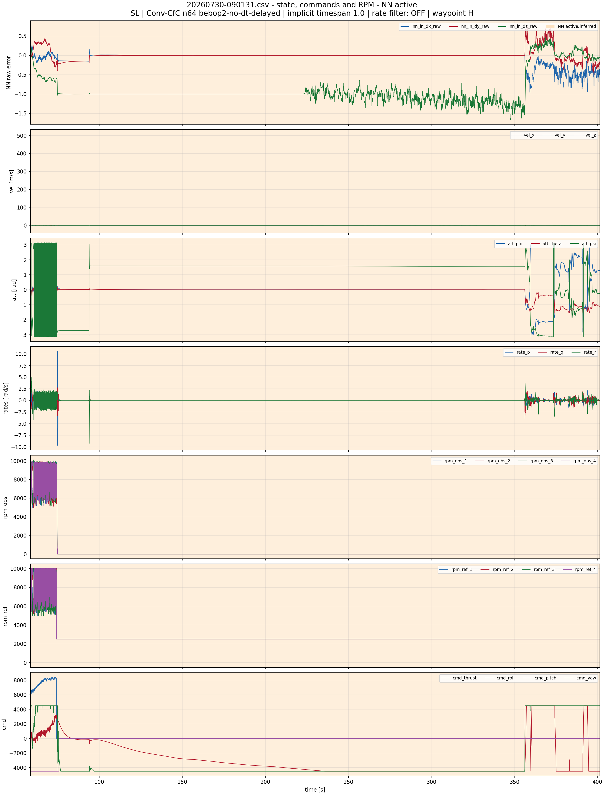
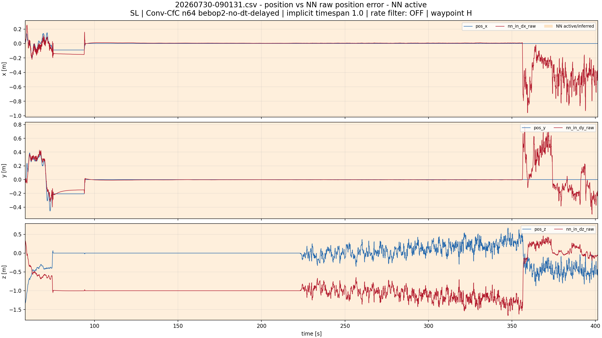
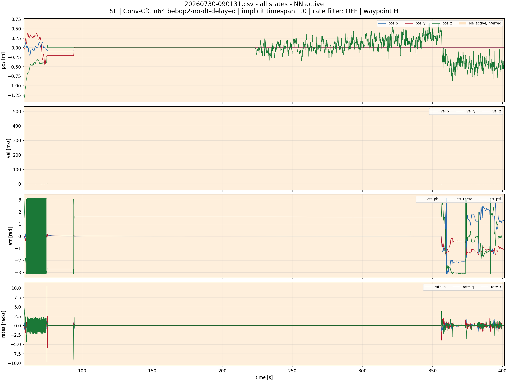
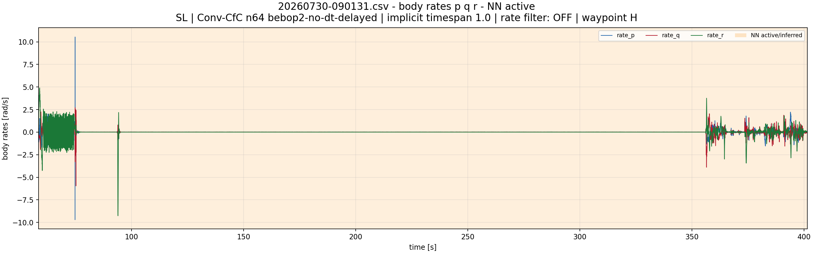
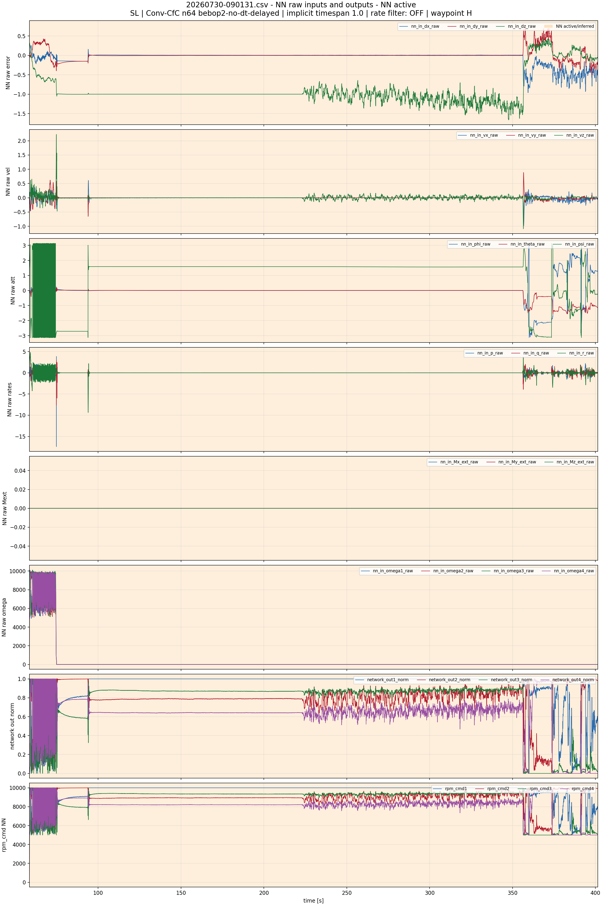
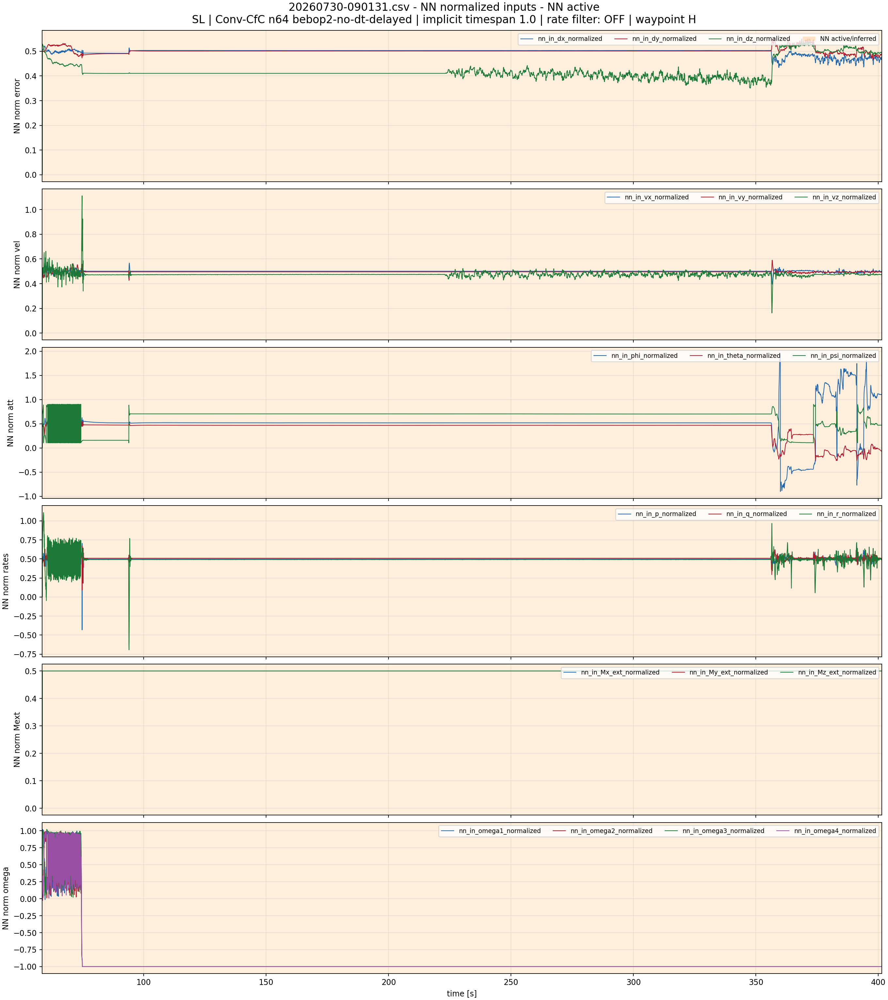
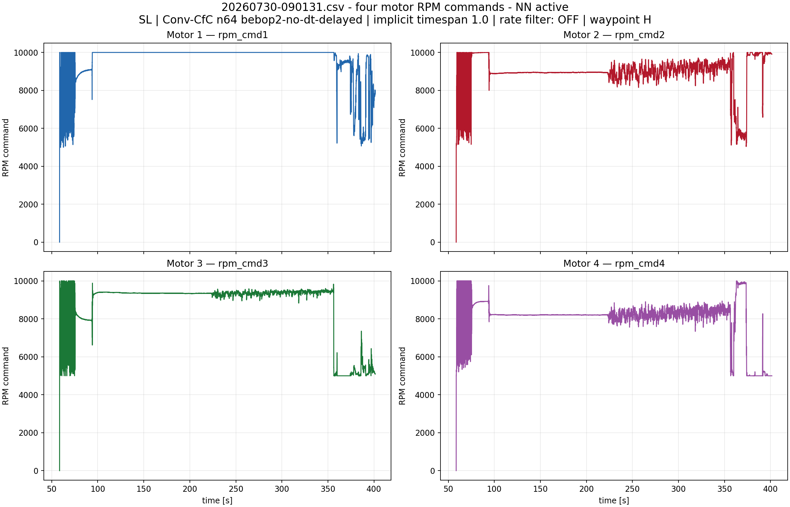
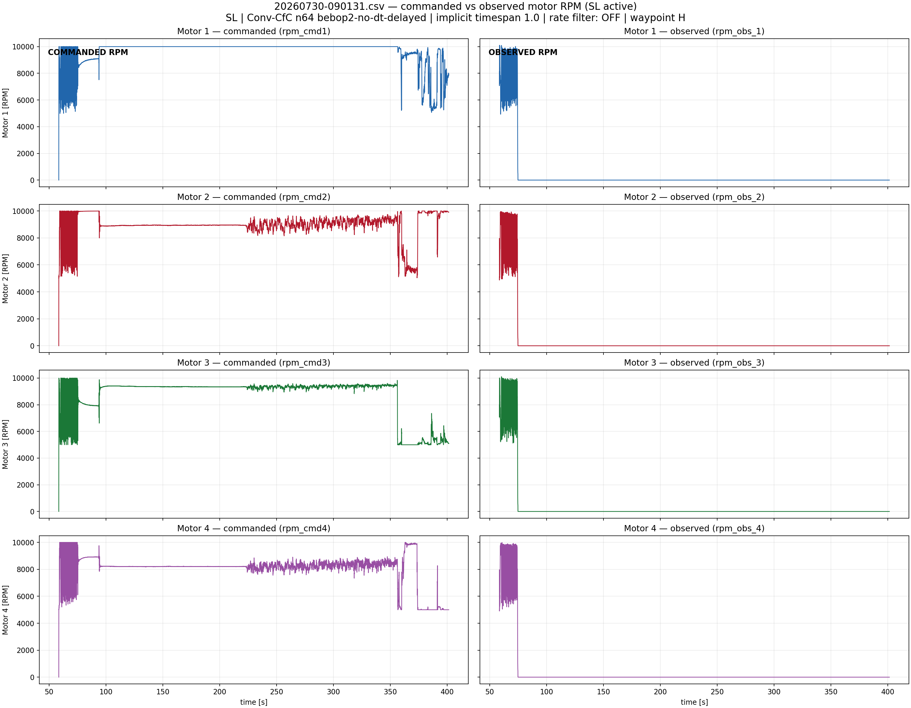

SL | Conv-CfC n64 bebop2-no-dt-delayed | implicit timespan 1.0 | rate filter: OFF | waypoint H
Orange bands mark NN activity. For old logs without nn_enabled, activity is inferred from nn_in_*, network_out*, and rpm_cmd* becoming non-zero.
NN intervals shown: [(58.575775, 401.422272)]







